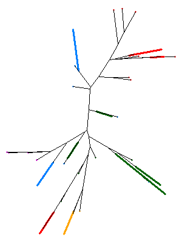
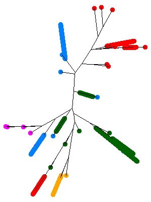

The R script
(ex_crohn.r)
demonstrates the settings for SNP data set, runs the phyclust()
by two clusters, calculates distances, builds
a neighbor-joining tree, and applies the plotnj()
to draw the tree by the HAMMING distance.
The data set has 1102 SNP sequences in 8 loci, and 39 sequences are unique.
In the following,
phyclust and
original from Hugot, J.P., et al. (2001).
|
 |
 |